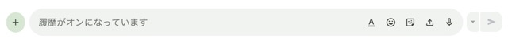

WideDropを作った
WideDropとは?
Google Chatでファイルをアップロードしやすくするブラウザ拡張機能です。

作った理由

ふつう、Google Chatにファイルをアップロードするときはファイルアップロードボタンを押すか、このほっっっそい入力欄にファイルをドラッグアンドドロップしなければなりません。
非常にめんどくさいのです。それを解決するために作りました。
どう動きますか?
ファイルをドラッグアンドドロップしようとすると、画面全体にオーバーレイが表示されどこに投げてもファイルが入力欄に添付されます。
しくみ ① ファイル検知、画面にオーバーレイ出す
function isChatSurface() {
return (
location.hostname === "chat.google.com" ||
location.hostname === "mail.google.com" ||
location.pathname.endsWith("/test-harness.html")
);
}まず、WideDropが動くページかを確認する。
hasDraggedFiles(event)ドラッグされたものがファイルかを確認します。
ファイルのドラッグを検知すると、
dragDepth += 1;
setOverlayVisible(true);
となり、画面にオーバーレイが現れる。
しくみ ② 入力欄を見つける
DOMに#composeのようなみたいな固定IDがあるとは限らない。そこでWideDropは候補を大量に探して点数をつける。
候補になるのは、
textarea
[contenteditable="true"]
[role="textbox"]そしてscoreComposerCandidate()で、入力欄だと思われるやつに加点する。
現在フォーカスされている : +80
role="textbox" : +35
contenteditable : +35
textarea : +28
「メッセージ」「返信」などの文字 : +38
逆に、こういった文字列が含まれる場合は大幅減点措置を取らせていただいております :
検索
フィルター
スペースを検索
ユーザーを検索
しくみ ③ 実際にドロップされたらファイルを読む
Dropイベントが発生すると、const files = readFilesNow(event.dataTransfer);
まずtransfer.filesから取得。それがダメならtransfer.itemsからgetAsFile()。二段構えである。
しくみ ④ 二重添付させません／本来の入力欄に直接落とした場合の挙動
同じファイルについて、ファイル名やサイズ、最終更新日時などから署名を作る。そして1.2秒以内に同じ署名がもう一回来たら重複扱いにする。
if (composer && event.target instanceof Node && composer.contains(event.target)) {
return;
}
WideDropは「入力欄以外に落としたときだけ」介入するのです。
しくみ ⑤ Dropイベントを入力欄に転送
composer.focus({ preventScroll: true });
dispatchDropSequence(
composer,
event,
event.dataTransfer
);
dispatchDropSequence()は、for (const type of ["dragenter", "dragover", "drop"])
しくみ ⑥ イベント監視
document.addEventListener("dragenter", handleDragEnter, true);
document.addEventListener("dragover", handleDragOver, true);
document.addEventListener("dragleave", handleDragLeave, true);
document.addEventListener("drop", handleDrop, true);
これによって、ページ全体でドラッグ＆ドロップを監視している。
つまりどういうことか
これは「画面全体を本物のDropゾーンにした」のではなく、「画面のどこで受けたDropでも、最終的に入力欄へのDropだったことにする」拡張機能です。
既知の問題
ページを完全に再読み込みせずにGoogle Chatのビュー間を移動すると、WideDropが誤ってアクティブまたは非アクティブのままになる場合があります。 GitHubで見る